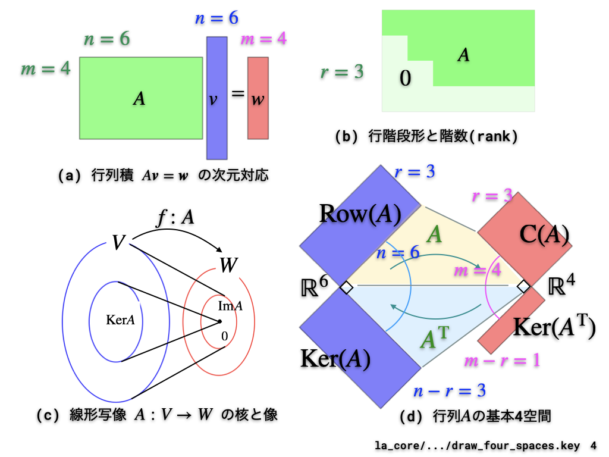
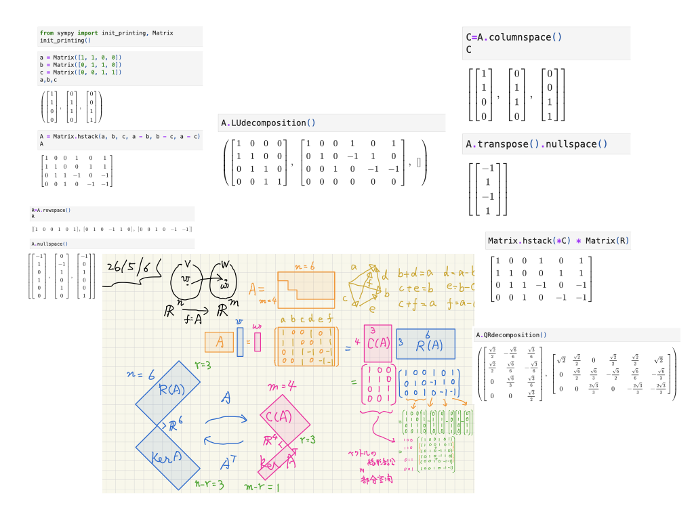

d5_1020:線形代数LA_sympy (QR vs SVD)
Table of Contents
prev_button up_button next_button
1. 線形代数のイメージ
 |
 |
線形代数の計算を提供するpackageはnumpyだけでなく， sympyもあります． こちらの方が見た目を綺麗にできるので， ちょっとした数学的な事柄を理解するのに重宝します． これを使って行列のshape, 基本４空間，QR分解によるフィッティングを 理解してもらいます．
2. 今週提出の課題
| 先週の宿題(提出不要) | ./linear_algebra_sympy.ipynb | github |
| 先週の宿題(要提出) | ./four_spaces_qr.ipynb | github |
| 先週の宿題解答例 | ./four_spaces_qr_ans.ipynb | github |
| グループ課題 | ./gw4_svd_vs_qr_sp.ipynb | github |
| 解答例 | ./gw4_svd_vs_qr_sp_ans.ipynb | github |